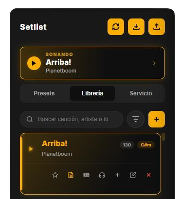
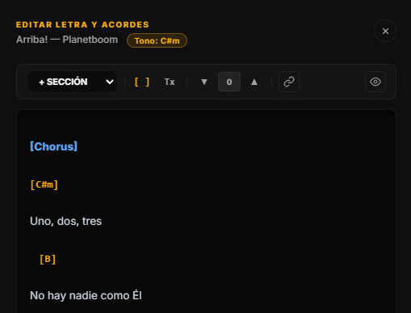
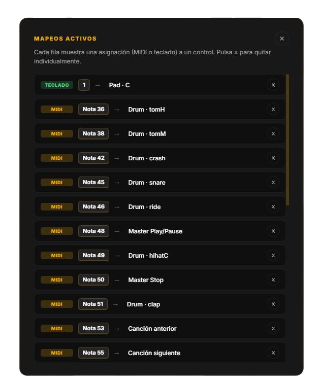
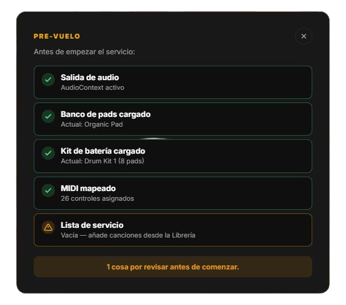

Pads ambientales continuos
3 bancos × 12 notas, crossfade automático de 2s entre tonos. Sin huecos cuando cambias de canción a media intro.
Pads ambientales continuos, metrónomo con timing sample-accurate, drums MIDI-mapeables, setlist con letras y acordes, transposición en vivo, y un mapeo de teclado / MIDI que se aprende solo. Sin ratón, sin latencia, sin silencios entre canciones.

Cada control está pensado para uso con teclado o MIDI — la cabina no necesita ratón. Cero latencia entre canciones, transiciones cruzadas suaves, y un editor de letras con acordes que se transpone con dos clicks.
3 bancos × 12 notas, crossfade automático de 2s entre tonos. Sin huecos cuando cambias de canción a media intro.
Lookahead scheduler de 100ms (Chris Wilson). Tap tempo, 5 compases, 7 sonidos, 1x/2x multiplier. Visualizador de beats clickable.
8 pads MIDI-mapeables, edición inline de nombres, asignación de samples MP3 desde disco. Crea tus propios kits sin salir de la app.
Importa, exporta, sincroniza con tu base remota. Búsqueda por título, artista o tono ("tono:G"). Favoritos, filtros, drag & drop.
Editor con auto-save, importación desde LaCuerda.net, transposición en vivo (±12 semitonos), preview formateado, secciones [VERSO 1] [CORO].
Asigna cualquier control a cualquier tecla o nota MIDI con modo Learn. Soporte CC para sliders. Vista de mapeos con clear individual.
Búsqueda global instantánea entre canciones y comandos. Fuzzy matching, navegación con flechas, Enter ejecuta. Como Linear o Notion.
GI.Setlist, Midnight Aurora, Crimson Power, Clean Worship, Deep Sea, Ambient Purple. Cambio instantáneo, persistencia, preview on hover.
Un banner encima del setlist muestra qué canción está sonando con el título en grande. Click → te lleva a la card en la librería. Para que sepas dónde estás sin escanear 80 entradas.

Auto-save cada 1.5s. Importa directamente desde LaCuerda.net con un click. Transpón ±12 semitonos respetando tu notación (sostenidos o bemoles). Pre-vista formateada con secciones [VERSO 1], [CORO], [PUENTE].

Modo Learn: clic en cualquier control, toca una tecla o pad MIDI, listo. La vista "Mapeos activos" muestra todos los enlaces actuales (TECLADO vs MIDI) con un × para borrar individualmente. Sin abrir DevTools.

Antes de empezar, abre el checklist desde el menú. 6 verificaciones: salida de audio activa, banco de pads cargado, kit de drums OK, MIDI mapeado, lista de canciones populada, metadatos BPM y tono completos.

Controla pads, BPM, tono y crossfades sin distraer al equipo. La pantalla del director es la cabina, no un papel impreso.
Letra con acordes en pantalla grande, transpuesta a tu tono, formateada con secciones claras. Sin papeles que se traspapelan.
Mapea cualquier control MIDI desde tu controlador físico. Faders para volumen, pads para drums, knobs para filtros. Una sola fuente de verdad.
Cada milisegundo cuenta en directo. Estos atajos cubren el 90% del flujo del servicio sin levantar las manos del teclado.
Busca cualquier canción o comando. Fuzzy matching estilo Linear, navegación con flechas, Enter ejecuta.
Pad + track + metrónomo en un solo botón.
Stagea la siguiente canción sin reproducir.
Fila superior dispara los 12 pads cromáticos.
8 pads del kit activo, hit-and-fade.
Avanza o retrocede en el setlist en vivo.
Inline edit form se abre instantáneamente.
Detiene todo y cierra cualquier modal.
Lista completa de atajos en el sidebar.
Por ahora solo Windows (instalador NSIS de 250 MB). Está construido en Electron, así que un build para macOS y Linux es trivial — pídelo cuando lo necesites.
No. La app funciona 100% offline. Solo necesitas internet si quieres sincronizar el setlist con tu base remota de MongoDB (opcional, configurable en %APPDATA%\LivePads\config.json).
Sí. Usa el modo "MIDI Learn": click en cualquier control de la app, toca tu pad / tecla / knob, listo. Soporta NoteOn, CC y mappings de teclado para los que prefieren tocar todo desde el portátil.
Tres opciones: (1) escribirlas a mano en el editor con auto-save, (2) importar desde una URL de LaCuerda.net con un click, (3) sincronizar con tu base de MongoDB si ya las tienes ahí.
Todo se guarda en %APPDATA%\LivePads\: librería de canciones, kits personalizados, mapeos MIDI/teclado, preferencias de tema, último banco de pads usado.
Sí. Repositorio en github.com/josemontilladev/Live-Pads. Uso personal y eclesiástico.
Descarga la última versión y prueba sin compromiso. Tu librería existente (si tienes una) se importa directo desde un .json.
Windows 10/11 · 250 MB · Edición Profesional v1.0